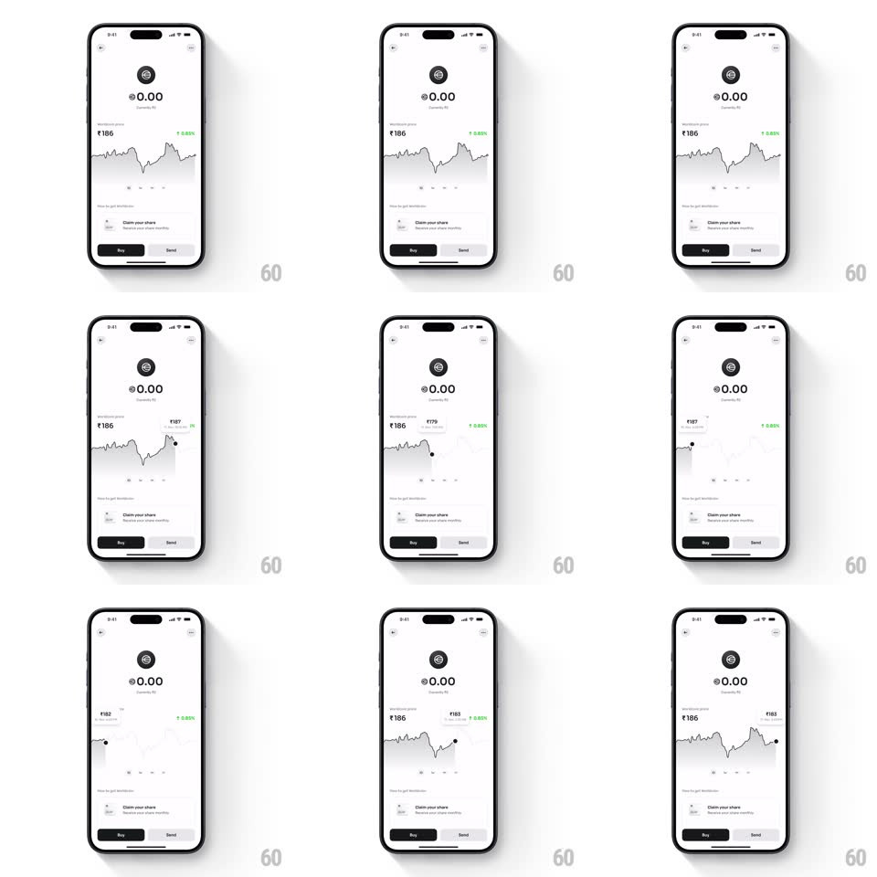

Media
Frame-by-frame

Rebuild this interaction 1:1: World App's price-graph scrubbing - dragging across the Worldcoin chart plants a tracking dot and vertical guide on the curve with a floating tooltip pill that follows the finger and updates price and timestamp in real time.

Rebuild this interaction 1:1: World App's price-graph scrubbing - dragging across the Worldcoin chart plants a tracking dot and vertical guide on the curve with a floating tooltip pill that follows the finger and updates price and timestamp in real time.
## Integration
Integration: stack-agnostic spec - springs given as stiffness/damping, timed motions as duration + curve; map every value to your framework and animation library of choice.
## Scene
The white Worldcoin wallet: balance ("0.00"), the price block ("Rs186" with a green "+5.83%"), a full-width line chart with a soft gradient fill, "Claim your share" row, and Buy/Send buttons at the bottom. During scrubbing a small floating pill shows the price ("Rs183", "Rs176") with the date/time under it.
## Motion spec
Pattern: chart scrub with floating tooltip.
- Touch down on the chart: the resting UI eases back (chart fill dims, header price fades 150ms) and the scrub state fades in: a dot lands on the curve under the finger, a hairline vertical guide extends through the chart, and the tooltip pill appears above the touch point (scale 0.8 -> 1, spring ~420/22).
- Drag: the dot rides the curve exactly (interpolated to the line, not the raw touch Y), the guide tracks the finger's X 1:1, and the pill follows horizontally - clamped at screen edges by flipping its anchor side.
- The pill's price and timestamp update live as it moves; the price change percent chip tints green/red by the scrubbed point vs. the range start.
- Release: the pill, dot, and guide fade out together (200ms) and the resting chart fades back.
## Calibration
- The dot snaps to the line's Y at the finger's X - never floats off the curve.
- The pill leads slightly above the finger so the number is never covered.
## Reduced motion
Scrub states swap without fades; pill appears static above the touch.
## Don't miss
- The timestamp in the pill is as prominent as the price - it's a lookup tool.
- The chart line under the scrubbing finger subtly brightens to the left of the guide (the "past" side).